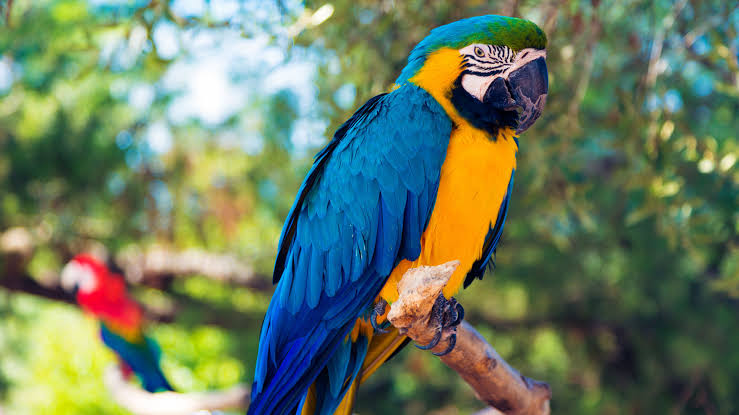

Parrot
Birds
Description
Parrots, also known as psittacines, are birds of the roughly 393 species in 92 genera comprising the order Psittaciformes, found mostly in tropical and subtropical regions. The order is subdivided into three superfamilies: the Psittacoidea, the Cacatuoidea, and the Strigopoidea.
Scientific name: Psittaciformes
Class: Aves
Order: Psittaciformes; Wagler, 1830
Kingdom: Animalia
Lifespan: Kakapo: 95 years, Hyacinth macaw: 50 years
Mass: Kakapo: 2 – 4 kg, Hyacinth macaw: 1.2 – 1.7 kg, Buff-faced pygmy parrot: 12 g
Parrot, term applied to a large group of gaudy, raucous birds of the family Psittacidae. Parrot also is used in reference to any member of a larger bird group, order Psittaciformes, which includes cockatoos (family Cacatuidae) as well.
Parrots have been kept as cage birds since ancient times, and they have always been popular because they are amusing, intelligent, and often affectionate. Several are astonishingly imitative of many sounds, including human speech.
The family Psittacidae numbers 333 species. The subfamily Psittacinae, the “true” parrots, is by far the largest subfamily, with members found in warm regions worldwide.
These birds have a blunt tongue and eat seeds, buds, and some fruits and insects. Many members of the subfamily are known simply as parrots, but various subgroups have more specific names such as macaw, parakeet, conure, and lovebird.
The African gray parrot (Psittacus erithacus) is unsurpassed as a talker; the male can precisely echo human speech. Captive birds are alert and, compared with other parrots, relatively good-tempered. Some are said to have lived 80 years.
The bird is about 33 cm (13 inches) long and is light gray except for its squared, red tail and bare, whitish face; the sexes look alike. Gray parrots are common in the rainforest, where they eat fruits and seeds; they damage crops but are important propagators of the oil palm.
Among other proficient mimics are the Amazon parrots (Amazona). The 31 species of Amazons are chunky birds, mostly 25 to 40 cm (10 to 16 inches) long, with slightly erectile crown feathers and a rather short, squared tail.
Their predominantly green plumage is marked with other bright colours, chiefly on the upper head; the sexes look alike. Amazon parrots live in tropical forests of the West Indies and Mexico to northern South America. They are difficult to breed and may be aggressive as well as squawky.
Common in aviaries is the blue-fronted Amazon (A. aestiva) of Brazil; it has a blue forehead, a yellow or blue crown, a yellow face, and red shoulders. The yellow-crowned parrot (A. ochrocephala) of Mexico, Central America, and from Ecuador to Brazil has some yellow on the head and neck, a red wing patch, and a yellow tail tip.
The monk, or green, parakeet (Myiopsitta monachus) is one of the hardiest parrot species. It is native to South America, but some have escaped from captivity in the United States and now nest in several states.
Its large stick nest is unique among psittaciforms. Other remarkable parrots of this subfamily include the hanging parrots (Loriculus), which sleep upside-down like bats. Caiques (Pionites) are small, short-tailed South American birds similar to conures in build and habits.
Biology of Parrot
Origins and evolution
Psittaciform diversity in South America and Australasia suggests that the order may have evolved in Gondwana, centred in Australasia.
The scarcity of parrots in the fossil record, however, presents difficulties in confirming the hypothesis, and there is currently a higher amount of fossil remains from the northern hemisphere in the early Cenozoic.
Molecular studies suggest that parrots evolved approximately 59 million years ago (Mya) (range 66–51 Mya) in Gondwana. The three major clades of Neotropical parrots originated about 50 Mya (range 57–41 Mya).
A single 15 mm (0.6 in) fragment from a large lower bill (UCMP 143274), found in deposits from the Lance Creek Formation in Niobrara County, Wyoming, had been thought to be the oldest parrot fossil and is presumed to have originated from the Late
Cretaceous period, which makes it about 70 million years old. However, other studies suggest that this fossil is not from a bird,
but from a caenagnathid oviraptorosaur (a non-avian dinosaur with a birdlike beak), as several details of the fossil used to
support its identity as a parrot are not actually exclusive to parrots, and it is dissimilar to the earliest-known unequivocal parrot fossils.
Phylogeny
The Psittaciformes comprise three main lineages: Strigopoidea, Psittacoidea and Cacatuoidea. The Strigopoidea were considered part of the Psittacoidea, but the former is now placed at the base of the parrot tree next to the remaining members of the Psittacoidea, as well as all members of the Cacatuoidea.
The Cacatuoidea are quite distinct, having a movable head crest, a different arrangement of the carotid arteries, a gall bladder, differences in the skull bones, and lack the Dyck texture feathers that—in the Psittacidae—scatter light to produce the vibrant
colours of so many parrots. Colourful feathers with high levels of psittacofulvin resist the feather-degrading bacterium Bacillus licheniformis better than white ones.
Lorikeets were previously regarded as a third family, Loriidae,:45 but are now considered a tribe (Loriini) within the subfamily Loriinae, family Psittaculidae. The two other tribes in the subfamily are the closely related fig parrots (two genera in the tribe Cyclopsittini) and budgerigar (tribe Melopsittacini).
Distribution and habitat
Parrots are found on all tropical and subtropical continents and regions including Australia and Oceania, South Asia, Southeast Asia, Central America, South America, and Africa. Some Caribbean and Pacific islands are home to endemic species.
By far the greatest number of parrot species come from Australasia and South America. The lories and lorikeets range from Sulawesi and the Philippines in the north to Australia and across the Pacific as far as French Polynesia, with the greatest diversity being found in and around New Guinea.
The subfamily Arinae encompasses all the neotropical parrots, including the amazons, macaws, and conures, and ranges from northern Mexico and the Bahamas to Tierra del Fuego in the southern tip of South America.
Diet
The diet of parrots consists of seeds, fruit, nectar, pollen, buds, and sometimes arthropods and other animal prey. The most important of these for most true parrots and cockatoos are seeds; the large and powerful bill has evolved to open and consume tough seeds.
All true parrots, except the Pesquet's parrot, employ the same method to obtain the seed from the husk; the seed is held between the mandibles and the lower mandible crushes the husk, whereupon the seed is rotated in the bill and the remaining husk is removed.
They may use their foot sometimes to hold large seeds in place. Parrots are granivores rather than seed dispersers, and in many cases where they are seen consuming fruit, they are only eating the fruit to get at the seed.
As seeds often have poisons that protect them, parrots carefully remove seed coats and other chemically defended fruit parts prior to ingestion. Many species in the Americas, Africa, and Papua New Guinea consume clay, which releases minerals and absorbs toxic compounds from the gut.
Breeding
With few exceptions, parrots are monogamous breeders who nest in cavities and hold no territories other than their nesting sites. The pair bonds of the parrots and cockatoos are strong and a pair remains close during the nonbreeding season, even if they join larger flocks.
As with many birds, pair bond formation is preceded by courtship displays; these are relatively simple in the case of cockatoos. In Psittacidae parrots' common breeding displays, usually undertaken by the male, include slow, deliberate steps known as a "parade" or "stately walk" and the "eye-blaze", where the pupil of the eye constricts to reveal the edge of the iris.
Allopreening is used by the pair to help maintain the bond. Cooperative breeding, where birds other than the breeding pair help raise the young and is common in some bird families, is extremely rare in parrots, and has only unambiguously been demonstrated
in the El Oro parakeet and the golden parakeet (which may also exhibit polygamous, or group breeding, behaviour with multiple females contributing to the clutch).